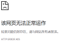

工作日志
Q: div之间有间隔，单单消除padding和margin有时消除不掉
Q: 为什么gif图放一段时间不动了，本地文件也不动了，重新更新了一次。

Q: 背景图片的显示
A: 使用
background-image: url(...)。外部 CSS 中的相对路径以 CSS 文件所在目录为基准；也可以使用以 / 开头的站点根路径。Q: PHP_EOL 和
\n 为何在页面中不换行，而 <br> 可以？A: HTML 默认会折叠普通文本中的空白和换行。需要显示换行时，可以使用
<br>，或通过 white-space: pre-wrap 保留文本换行。Q: 服务器如果远程下载GitHub的内容，会生成一个git文件，那如何自动部署呢？
A:
.git 是版本控制目录，下载代码本身不等于部署。自动部署需要在代码更新后触发构建或发布步骤；具体方式取决于托管平台和服务器配置。Q: 异步提交是啥?当前页面提交怎么办到?
Q: 本地提交表单时出现 405 错误：

（服务器里可以正确提交），如何解决？A: 405 表示目标资源不允许该请求方法。检查表单的
action、method 和服务端路由；仅运行静态文件服务器不能处理 PHP 表单。Q: 咱的图片加载不出来啊！！！提交到服务器可以，那在本地呢？
A: 检查图片路径相对于当前 HTML 的位置、文件名大小写以及文件是否存在，并在浏览器网络面板确认请求地址和状态码。
Q: 如何用相对路径显示照片呢？
A:
../ 指上一级目录；./ 或不加前缀，通常相对于当前文档 URL 所在目录解析。以
/ 开头是站点根路径，例如 /assets/example.jpg；完整 URL 则包含协议和主机，例如 https://example.com/image.jpg。URL 路径与服务器文件系统路径不是同一个概念。文件系统的绝对路径形式取决于操作系统。
一些注意点
- 部分字体属性可以继承；表单控件需要时可显式设置
font: inherit。 - CSS 层叠需要考虑来源、重要性和层叠层；这些条件相同时，再比较选择器优先级等规则。普通同层规则的优先级相同时，后声明的规则生效，不能只理解为“近的高”。
- 字符数、字节数和显示宽度不同。常见汉字在 UTF-8 编码中通常占 3 个字节，部分扩展汉字占 4 个字节；显示宽度取决于字体与排版。
transform: translate(-50%, 0)让元素向左平移自身参考框宽度的一半，不会改变它在普通文档流中原先占据的位置。- hexo博客部署命令：hexo clean, hexo generate, hexo deploy. 前两个加hexo server是本地运行博客。
- text-decoration 文本装饰，可用于去除下划线。
calc()中的加号和减号两侧需要空格，例如calc(100% - 24px)。- opacity透明度